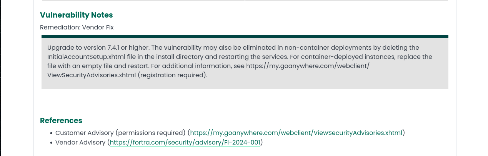

Apartado 1 - Trazado de la vulnerabiliad.
Durante esta sección, se detallan diferentes aspectos sobre la vulnerabilidad crítica de omisión de autenticación en GoAnywhere MFT de Fortra. El objetivo es identificar claramente el trazado, la información acerca de esta, el riesgo, criticidad y sus posibles debilidades que puedan ser explotadas.
Indice:
- Fuentes y trazas de la vulnerabilidad
- Vulnerabilidades encontradas
- Riesgo y criticidad de “CVE-2024-0204”
- Debilidades explotadas
- Información sobre uno de los patrones de ataque
- Registro CVE
Fuentes y trazas de la vulnerabilidad
La vulnerabilidad crítica de omisión de autenticación en GoAnywhere MFT de Fortra, se ha obtenido de este enlace. Concretamente es la vulnerabilidad CVE-2024-0204 en *GoAnywhere Managed File Transfer (MFT), cuya herramienta la desarrollo Fortra.*
En el enlace pasado anteriormente, podemos ver los siguientes datos según Fortra:
- Criticidad: Critica
- Día de publicación: 22-enero-2024
- Vulnerabilidad: CVE-2024-0204

Vulnerabilidad encontrada
La vulnerabilidad Authentication Bypass en GoAnywhere MFT (CVE-2024-0204) es un fallo crítico que permite a un atacante no autenticado eludir los controles de acceso y crear cuentas administrativas mediante el componente de configuración inicial del sistema. Esto puede derivar en el compromiso total de la plataforma, acceso a información sensible y manipulación de transferencias de archivos.
La mitigación principal consiste en actualizar GoAnywhere MFT a la versión 7.4.1 o superior, donde el problema ha sido corregido. Como medida alternativa, en implementaciones no basadas en contenedores, la vulnerabilidad puede eliminarse borrando el archivo InitialAccountSetup.xhtml del directorio de instalación y reiniciando los servicios. En entornos con contenedores, se recomienda reemplazar dicho archivo por uno vacío y reiniciar la instancia.

Riesgo y criticidad de “CVE-2024-0204”
En el NIST, podemos ver que en su base de datos se encuentra registrada esta vulnerabilidad. Desde esta, podemos observar que dicha vulnerabilidad tiene una valoración de 9.8 y esta marcada como crítica (Según el estadar CVSS 3.1).

En esta podemos observar el vector(CVSS:3.1/AV:N/AC:L/PR:N/UI:N/S:U/C:H/I:H/A:H), el cual nos indica:
-
AV – Vector de ataque: N (Network)
La vulnerabilidad puede explotarse remotamente a través de la red, sin necesidad de acceso físico o local.
-
AC – Complejidad del ataque: L (Low)
El ataque es sencillo de ejecutar y no requiere condiciones especiales.
-
PR – Privilegios requeridos: N (None)
El atacante no necesita autenticarse ni contar con privilegios previos.
-
UI – Interacción del usuario: N (None)
No se requiere ninguna acción por parte de un usuario legítimo para que el ataque tenga éxito.
-
S – Alcance: U (Unchanged)
El impacto del ataque se limita al mismo componente vulnerable, sin afectar a otros sistemas.
-
C – Impacto en la confidencialidad: H (High)
Posible exposición total de información sensible.
-
I – Impacto en la integridad: H (High)
El atacante puede modificar o manipular datos de forma crítica.
-
A – Impacto en la disponibilidad: H (High)
Puede provocar interrupción completa del servicio o denegación de acceso.

Debilidades explotadas
En este caso, solo hay una debilidad detectada, que es CWE-425.

Para analizarla, iremos a al MITRE, el cual nos indica que esta debilidad ocurre debido a que la no aplica controles de autorización en las URLs, scripts o archivos. Este fallo, permite que los atacantes alcancen recursos sensibles sin pasar por el flujo de navegación adecuado.
Con ello, los atacantes pueden vulnerar confidencialidad, integridad, disponibilidad, control de acceso ya que pueden llegar a realizar:
- Lectura de datos.
- Modificación de datos
- Ejecución de comandos.
- Ganar privilegios

Los patrones de ataque utilizados son:
- Indexación de directorios
- Detectar páginas web no publicadas
- Detectar servicios web no publicados
- Negociación de claves de ataque Bluetooth (KNOB)
- Navegación forzosa

Información de uno de los patrones de ataque
Podemos acceder a información sobre los patrones de ataque en la lista mantenida por MITRE en la dirección capec.mitre.org.
En el caso que nos atañe, hemos determinado que la vulnerabilidad que estamos analizando puede explotarse mediante el patrón de ataque CAPEC‑127 (Directory Indexing), el cual describe ataques basados en la indexación no controlada de directorios en servidores web.
Podemos observar que este ataque consiste en provocar que el servidor web muestre el contenido de un directorio, en lugar de servir un archivo concreto.
El atacante puede aprovechar esta situación para explorar la estructura interna del sistema, descubriendo archivos y directorios que no deberían ser accesibles públicamente, como copias de seguridad, archivos de configuración o scripts internos.

Registro CVE
Este es el registro sobre la vulnerabilidad CVE-2024-0204, la cual contiene información sobre la vulnerabilidad, que puede ser usado para el análisis y la automatización de respuestas.
El siguiente enlace redirige al .json oficial: enlace.